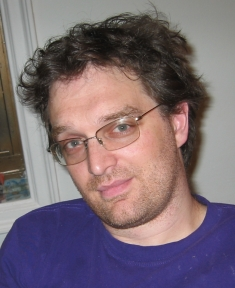
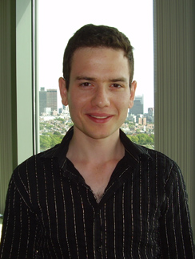
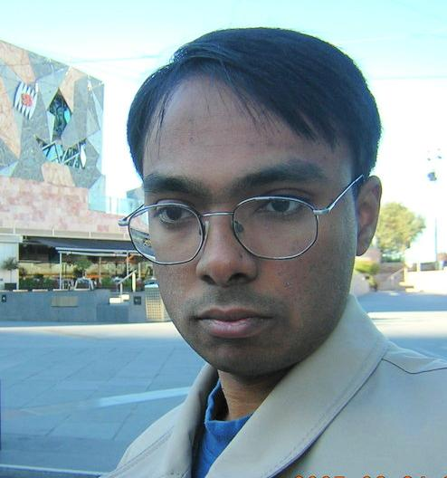
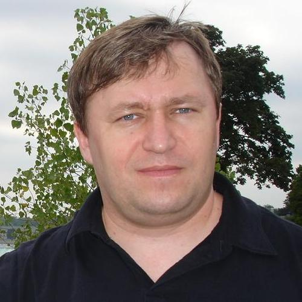
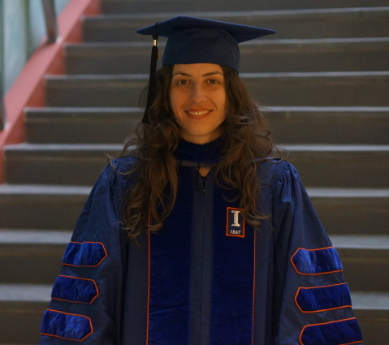
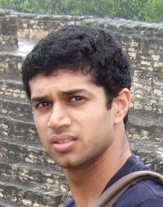

Information
In the recent years the field of sublinear algorithms has led to multiple exciting new theoretical developments in algorithms for massive data processing. The goal of this workshop is to discuss recent work and new challenges in sublinear algorithms and how they relate to Big Data and massively parallel computing. Among multiple research areas represented at this workshop primary focus will be given to algorithms for MapReduce, streaming, distributed machine learning, property testing and communication complexity. An in-depth coverage of these topics will be given through 5 invited keynotes and tutorials accompanied by 15-20 talks by the leading experts in the area with broad representation from both academia and industry. We highly encourage attendance by graduate students who will have an opportunity to showcase their work during a poster session.
|
|
Tweet
Schedule
Day 1, August 27
-
09:00 – 10:00
Piotr Indyk (MIT)
Keynote: Streaming Algorithms for Set CoverIn the Set Cover problem, we are given a collection of sets S_1...S_m that cover {1...n} and want to find a minimum cardinality sub-collection that covers the same set. In the streaming version of this problem, the sets are stored consecutively in a read-only memory and an algorithm can access them by performing sequential scans of the input. Over the last few years several algorithms for this problem have been discovered. The algorithms achieve various tradeoffs between the number of passes over the input, the amount of storage used and the approximation factor.
In this talk I will give an overview of what we know about this problem, followed by several new upper and lower bounds. In particular, I will describe a recent algorithm that uses O(p) passes and O(m n^(1/p)) storage while guaranteeing O(p log n) approximation factor, as well as lower bounds that indicate that some of the tradeoffs achieved by this algorithm might be tight.
Joint work with Sepideh Mahabadi and Ali Vakilian. -
10:00 – 10:30
Coffee Break
-
10:30 – 12:30
Amit Chakrabarti (Dartmouth College)
Optimization While StreamingDealing with the space limitations and sequential-access constraints of the data-streaming model has infused new life into a wide array of algorithmic problems. A recent and growing trend has been to revisit classic combinatorial optimization problems in the streaming setting. In this talk I shall address two recent works in this vein, the first on constrained submodular maximisation, and the second on set cover.
Each of these problems is defined over a "ground set" or "universe", which we shall take to be [n] := {1,2,...,n}. The input is then a stream of subsets of this universe: the sets themselves in the case of set cover, and (say) the edges of a graph on [n] in the case of maximum-submodular matching. Our focus shall be on semi-streaming algorithms: those running in space O(n poly(log n)).
For the matching problem (and, more generally, submodular maximization) we give new one-pass and multi-pass upper bounds, leaving the establishment of corresponding lower bounds as interesting open problems. For set cover, we give tight upper and lower bounds that fully resolve the pass/approximation tradeoffs achievable: in short, p semi-streaming passes lead to an approximation ratio of n^{1/(p+1)}. The set cover lower bound uses a novel algebraic construction of an abstract incidence geometry, which may be interesting in its own right as a combinatorial result.
Based on separate joint works with Sagar Kale and Tony Wirth.
Graham Cormode (University of Warwick)
A Second Look at Counting Triangles in Graph StreamsThe problems of counting and enumerating triangles in large data has attracted much interest, as it represents a simple, canonical challenge in analyzing large graphs. This seems particularly challenging in the traditional one-pass streaming model. It turns out that models that allow multiple passes provide better dependencies. In particular, just two passes suffices to give better results, parameterized in terms of the number of edges and the number of triangles, and more passes do not help to improve this dependency.
Joint work with Hossein Jowhari.
Artur Czumaj (University of Warwick)
TBD
Sanjeev Khanna (University of Pennsylvania)
TBD -
12:30 – 14:00
Lunch Break
-
14:00 – 14:10
DIMACS Welcome -
14:10 – 15:10
David Woodruff (IBM Research, Almaden)
Tutorial: A Survey of Results in the Message Passing Communication ModelI'll discuss various tools for proving bounds in the message passing communication model, where there are k players each with an input who speak to each other in a point-to-point communication network, with the goal being to solve a function of their inputs while minimizing total communication. I'll discuss graph problems, linear-algebraic problems, and statistical problems.
-
15:10 – 15:30
Coffee Break
-
15:30 – 18:30
Alina Ene (University of Warwick)
The Power of Randomization: Distributed Submodular Maximization on Massive DatasetsA wide variety of problems in machine learning, including exemplar clustering, document summarization, and sensor placement, can be cast as constrained submodular maximization problems. Unfortunately, the resulting submodular optimization problems are often too large to be solved on a single machine. In this talk, we describe a simple distributed algorithm that is embarrassingly parallel and it achieves provable, constant factor, worst-case approximation guarantees. We demonstrate its efficiency in large problems with different kinds of constraints with objective values always close to what is achievable in the centralized setting.
This is joint work with Rafael Barbosa, Huy Nguyen and Justin Ward.
Silvio Lattanzi (Google Research, NYC)
Distributed Balanced Clustering via Mapping CoresetsLarge-scale clustering of data points in metric spaces is an important problem in mining big data sets. For many applications, we face explicit or implicit size constraints for each cluster which leads to the problem of clustering under capacity constraints or the “balanced clustering” problem. Although the balanced clustering problem has been widely studied, developing a theoretically sound distributed algorithm remains an open problem. In the present paper we develop a new technique based on “mapping coresets” to tackle this issue. Our technique results in first distributed approximation algorithms for balanced clustering problems for a wide range of clustering objective functions such as k-center, k-median, and kmeans. A coreset for a point-set in a metric space is a subset of the point-set with the property that an approximate solution to the whole point-set can be obtained given the coreset alone. A mapping coreset is coreset with an additional mapping of points in the original space to points in the coreset. In addition to solutions of the coresets, the mapping of points will later be used to reconstruct the solution to the original problem. In this paper, we first show that using mapping coresets, one can turn a single-machine α-approximation algorithms for balanced clustering problem to an efficient distributed O(α)-approximation algorithm for the same problem in massive data processing frameworks such as the MapReduce framework and streaming algorithms. Furthermore, we develop a mapping coreset for a general class of balanced clustering problems. Using this technique, we will develop the first constant-factor approximation algorithms for balanced k-center, k-median, and k-means running in a constant number of rounds. Moreover even for some general variants of the uncapacitated clustering problems our general framework implies the first constant-factor distributed approximation algorithm in a constant number of rounds.
Michael Mahoney (University of California, Berkeley)
Linear and sublinear aspects of combining SGD and RLAIn recent years, stochastic gradient descent (SGD) methods and randomized linear algebra (RLA) algorithms have been applied to many large-scale problems in machine learning and data analysis. SGD methods are easy to implement and applicable to a wide range of convex optimization problems. In contrast, RLA algorithms provide much stronger performance guarantees but are applicable to a narrower class of problems. In addition, both SGD and RLA methods have been studied from an algorithmic perspective, where one must at least touch all of the data in order to obtain nontrivial results, as well as from a statistical perspective, where one can obtain stronger results without even looking at the entire data under quite strong statistical assumptions. We discuss some of these results, and we describe how to use ideas from stochastic optimization to develop a hybrid algorithm for overdetermined L1 and L2 regression that uses RLA techniques for preconditioning and constructing an importance sampling distribution, and then performs an SGD-like iterative process with weighted sampling on the preconditioned system.
Vahab Mirrokni (Google Research, NYC)
TBD
Krzysztof Onak (IBM Research, NY)
TBD
C. Seshadhri (University of California, Santa Cruz)
Know thy graphs, for it beats fancy algorithmicsWhile it is apparent (to us theorists at least) that sublinear algorithms can solve big data problems, the path is not as clear as one may think. Consider pattern counting in graphs, a theoretically clean and practically relevant problem for massive graph analysis. For example, one may want the triangle/4-clique count of a large social network, or want to the relative fraction of triangles incident to low degree vertices in a web network. The secret to designing provable and practical algorithms is not fancy algorithmics, but rather a deeper understanding of the properties of real-world datasets. With the right intuition on *what* real graphs look like, we can design simple, easy to prove algorithms, that work well in practice. Some of this knowledge goes back and inspires new theoretical results on the classic problem of triangle counting.
This talk is a survey of recent results on counting small subgraphs that highlights this journey between theory and practice. -
18:30 – 20:00
Dinner + Poster Session
Day 2, August 28
-
09:00 – 10:00
Ashish Goel (Stanford University)
Keynote: Sublinear Algorithms for PageRank, with ApplicationsTBD
-
10:00 – 10:30
Coffee Break
-
10:30 – 11:30
Sergei Vassilvitskii (Google Research, NYC)
Tutorial: TBDTBD
-
11:30 – 12:30
Jelani Nelson (Harvard University)
An introduction to chaining, and applications to sublinear algorithmsThis talk will give a short introduction to chaining methods in probability, present in the works of Kolmogorov and developed by many since (see the book by Talagrand). Applications related to sublinear algorithms will be highlighted, such as to compressed sensing and dimensionality reduction.
This talk is based on works by many authors, none of whom is me.
Ronitt Rubinfeld (MIT)
Testing and Correcting Structured DistributionsGiven samples of a distribution from an unknown source, one would like to understand what properties the underlying distribution exhibits. When the distribution is over a very large underlying domain, traditional statistics techniques do not usually give a satisfying answer. We survey recent results which give general purpose techniques for addressing such questions. These results apply to a variety of structured properties defined in terms of "shape constraints".
We next suggest a principled methodology for "correcting" samples of distributions which come from a noisy or imperfect source. We show connections between these correction procedures and distribution learning and property testing algorithms.
Some of the results described represent joint work with Clement Canonne, Ilias Diakonikolas and Themis Gouleakis. -
12:30 – 14:00
Lunch Break
-
14:00 – 15:00
John Langford (Microsoft Research, NYC)
Keynote: Logarithic Time PredictionMost multiclass learning algorithms require time O(K) to predict one of K different classes. Yet the lower bound is Omega(log K).
Why is there an exponential gap? Can it be closed? I will discuss a number of results related to the feasibility of logarithmic time prediction, algorithms for doing so, and the results they achieve. -
15:00 – 15:30
Coffee Break
-
15:30 – 18:30
Kamesh Munagala (Duke University)
Efficient primal-dual graph algorithms on MapReduceWe present improved algorithms for some key graph-theoretic problems in the popular MapReduce framework. We first consider the densest subgraph problem and present a primal-dual algorithm that provides a (1 + eps) approximation and takes O(1/eps^2 log n) MapReduce iterations, each iteration having a shuffle size of O(m) and a reduce-key-complexity of O(dmax). Here m is the number of edges, n is the number of vertices, and dmax is the maximum degree of a node. Our key idea is to carefully control the width of the underlying polytope so that the number of iterations becomes small, but an approximate primal solution can still be recovered from the approximate dual solution. Our technique also applies to maximum multicommodity flows with bounded path lengths, and our algorithms also naturally map to the PRAM model. For the problems we consider, the best previous distributed algorithms needed number of iterations depending on 1/eps^4, in order to achieve a (1+eps) approximation.
Nina Balcan (Carnegie Mellon University)
TBD
Mark Braverman (Princeton University)
Communication lower bounds for statistical estimation problems via a distributed data processing inequalityWe study the tradeoff between the statistical error and communication cost for distributed statistical estimation problems in high dimensions. In the distributed sparse Gaussian mean estimation problem, each of the m machines receives n data points from a d-dimensional Gaussian distribution with unknown mean theta which is promised to be k-sparse. The machines communicate by message passing and aim to estimate the mean theta. We provide a tight (up to logarithmic factors) tradeoff between the estimation error and the number of bits communicated between the machines.
This bound directly leads to a lower bound for the distributed sparse linear regression problem: to achieve the statistical minimax error, the total communication is at least Omega(min{n,d}m), where n is the number of observations that each machine receives and d is the ambient dimension. As our main technique, we prove a distributed data processing inequality, as a generalization of usual data processing inequalities, which might be of independent interest. Finally, we give a communication-optimal protocol for distributed Gaussian mean estimation, improving the number of rounds of the previous such protocol from O(log m) to 1.
Joint work with Ankit Garg, Tengyu Ma, Huy Nguyen, and David Woodruff
Sudipto Guha (University of Pennsylvania)
TBD
Andrew McGregor (University of Massachusetts, Amherst)
The Latest on Linear Sketching for Large Graphs: Lots of Problems, Little SpaceIn this talk, we survey recent work on using random linear projections, a.k.a. sketches, to solve graph problems. Sketches are useful in a variety of computational models including the dynamic graph stream model were the input is defined by a stream of edge insertions and deletions that need to be processed in small space. A large number of problems have now been considered in this model including edge and vertex connectivity, sparsification, densest subgraph, correlation clustering, vertex cover and matching.
Justin Thaler (Yahoo! Research, NYC)
Parallel Peeling AlgorithmsConsider the following peeling process: starting with a random hypergraph, repeatedly remove vertices with degree less than k, together with their incident edges, until the hypergraph is empty or the process cannot continue. In a surprising variety of settings, this simple process produces algorithms with very fast running times, typically linear in the size of the hypergraph.
After surveying applications of such peeling algorithms to various big data problems, I will discuss methods for parallelizing the peeling process. Our analysis yields parallel peeling algorithms that are highly efficient, completing in just O(log log n) rounds.
Joint work with Jiayang Jiang and Michael Mitzenmacher
Speakers
Keynote Speakers
-

Ashish Goel (Stanford University)
Ashish Goel is a Professor of Management Science and Engineering and (by courtesy) Computer Science at Stanford University, and a member of Stanford's Institute for Computational and Mathematical Engineering. He received his PhD in Computer Science from Stanford in 1999, and was an Assistant Professor of Computer Science at the University of Southern California from 1999 to 2002. His research interests lie in the design, analysis, and applications of algorithms; current application areas of interest include social networks, participatory democracy, Internet commerce, and large scale data processing. Professor Goel is a recipient of an Alfred P. Sloan faculty fellowship (2004-06), a Terman faculty fellowship from Stanford, an NSF Career Award (2002-07), and a Rajeev Motwani mentorship award (2010). He was a co-author on the paper that won the best paper award at WWW 2009, and an Edelman Laureate in 2014.
Professor Goel was a research fellow and technical advisor at Twitter, Inc. from July 2009 to Aug 2014.
-
Piotr Indyk (Massachusetts Institute of Technology)
Piotr joined MIT in September 2000, after earning PhD from Stanford University. Earlier, he received Magister degree from Uniwersytet Warszawski in 1995. As of July 2010, he holds the title of Professor in the Department of Electrical Engineering and Computer Science.
Piotr's research interests include algorithms for high-dimensional geometric problems, algorithms using sublinear time and/or space and streaming algorithms.
-

John Langford (Microsoft Research, NYC)
John Langford studied Physics and Computer Science at the California Institute of Technology, earning a double bachelor's degree in 1997, and received his Ph.D. from Carnegie Mellon University in 2002. Since then, he has worked at Yahoo!, Toyota Technological Institute, and IBM's Watson Research Center. He is also the primary author of the popular Machine Learning weblog, hunch.net and the principle developer of Vowpal Wabbit. Previous research projects include Isomap, Captcha, Learning Reductions, Cover Trees, and Contextual Bandit learning. For more information visit his homepage.
Tutorial Speakers
-
Sergei Vassilvitskii (Google Research, NYC)
Sergei Vassilvitskii is a Research Scientist at Google New York. Previously he was a Research Scientist at Yahoo! Research and an Adjunct Assistant Professor at Columbia University. He completed my PhD at Stanford Universty under the supervision of Rajeev Motwani. Prior to that he was an undergraduate at Cornell University.
-
David Woodruff (IBM Research, Almaden)
David Woodruff is a Research Staff Member at IBM Research, Almaden. David did his Ph.D. at MIT in theoretical computer science. He was very fortunate to have Piotr Indyk as his advisor and to spend a year at Tsinghua University under the supervision of Andy Yao. His current interests are communication complexity, data stream algorithms and lower bounds, graph algorithms, machine learning, numerical linear algebra, sketching, and sparse recovery.
Regular Speakers
-
Nina Balcan (Carnegie Mellon University)
Maria Florina Balcan is an Associate Professor in the School of Computer Science at Carnegie Mellon University. Her main research interests are machine learning, computational aspects in economics and game theory, and algorithms. Her honors include the CMU SCS Distinguished Dissertation Award, an NSF CAREER Award, a Microsoft Faculty Research Fellowship, a Sloan Research Fellowship, and several paper awards. She is currently a board member of the International Machine Learning Society and was recently Program Committee Chair for COLT 2014.
-

Mark Braverman (Princeton University)
Assistant Professor Mark Braverman joined the department in 2011 from the University of Toronto, where he was an assistant professor in the mathematics and computer science departments. He earned his Ph.D. in 2008 from Toronto and did post-doctoral research at Microsoft Research New England, Cambridge, MA. Professor Braverman’s interests center on the connections between theoretical computer science and other disciplines, including information theory, mathematics, and economics. Most recently, he has been building new connections between information theory and complexity theory, and investigating how better algorithms can lead to better mechanism design, particularly in the context of healthcare.
-

Amit Chakrabarti (Dartmouth College)
Amit Chakrabarti is an Associate Professor in the Department of Computer Science at Dartmouth College. He received an M.A. and a Ph.D. in Computer Science from Princeton University in 2002 and a B.Tech. in Computer Science from the Indian Institute of Technology, Bombay, along with the President of India Gold Medal, in 1997. Professor Chakrabarti's research is in the broad area of theoretical computer science. Specific interests are (1) complexity theory, especially communication complexity and the application of information theory, and (2) algorithms, including space-efficient algorithms for massive data streams and approximation techniques for optimization problems.
-
Graham Cormode (University of Warwick)
Graham Cormode is a professor in the Department of Computer Science at the University of Warwick in the UK. His interests are in data stream analysis, massive data sets, and general algorithmic problems. Previously, he has been a researcher at AT&T Labs–Research in New Jersey, and at Lucent Bell Laboratories, with focus on Network Management. Previously, he was a Postdoc researcher at the DIMACS research facility, which is located at Rutgers University.
-

Artur Czumaj (University of Warwick)
Artur Czumaj is a Professor of Computer Science and Director of the Centre for Discrete Mathematics and its Applications (DIMAP) at the University of Warwick. He received his Ph.D. in 1995 from the University of Paderborn in Germany. Before joining the University of Warwick in 2006, he was with the University of Paderborn and with the New Jersey Institute of Technology. His main research interest is in the broadly understood area of the design of randomized algorithms and their probabilistic analysis, with applications to property testing and sublinear algorithms, optimization algorithms, parallel and distributed computing, string matching, and algorithmic game theory.
-

Alina Ene (University of Warwick)
Alina Ene is an Assistant Professor in the Department of Computer Science at the University of Warwick. Previously, she was a postdoc in the Center for Computational Intractability in Princeton. Her research interests include submodularity, graph algorithms including routing and network design, algorithms for massive data, and applications in machine learning and computer vision.
-
Sudipto Guha (University of Pennsylvania)
Sudipto Guha is an Associate Professor in the Department of Computer and Information Sciences at University of Pennsylvania since Fall 2001. He completed his Ph.D. in 2000 at Stanford University working on approximation algorithms and spent a year working as a senior member of technical staff in Network Optimizations and Analysis Research department in AT&T Shannon Labs Research. He is a recipient of the NSF CAREER award and the Alfred P. Sloan Foundation fellowship.
-
Sanjeev Khanna (University of Pennsylvania)
Sanjeev Khanna is a Henry Salvatori Professor of Computer and Information Science at University of Pennsylvania. He received a Ph.D. in Computer Science from Stanford University (1996), and undergraduate degrees in Computer Science and Economics from Birla Institute of Technology, India (1990). From 1996 to 1999, he was a member of the Mathematical Sciences Research center at Bell Labs. He joined University of Pennsylvania in 1999. Sanjeev's research interests are in algorithms and complexity with a focus on approximation algorithms and hardness of approximation. He is a recipient of an Arthur Samuel dissertation award, a Sloan Fellowship, and a Guggenheim Fellowship.
-
Silvio Lattanzi(Google Research, NYC)
Silvio is a research scientist at Google New York. He received his PhD in Computer Science from Sapienza University of Rome under the supervision of Alessandro Panconesi. Silvio's research interests include efficient algorithms, social networks analysis and data mining.
-
Michael Mahoney (University of California, Berkeley)
Michael Mahoney is in the Department of Statistics at the University of California, Berkeley. His research focuses on algorithmic and statistical aspects of modern large-scale data analysis and large-scale machine learning. Specific topics include randomized matrix algorithms and randomized numerical linear algebra, geometric network analysis tools for structure extraction in large informatics graphs, scalable implicit regularization methods, and applications in genetics, astronomy, medical imaging, social network analysis, and internet data analysis. He received his PhD from Yale University with a dissertation in computational statistical mechanics, and he has worked and taught at Yale University in the mathematics department, at Yahoo Research, and at Stanford University in the mathematics department. He served on the National Advisory Committee of the Statistical and Applied Mathematical Sciences Institute (SAMSI); he was on the National Research Council's Committee on the Analysis of Massive Data; he runs the biennial MMDS Workshops on Algorithms for Modern Massive Data Sets; and he spent fall 2013 at UC Berkeley co-organizing the Simons Foundation's program on the Theoretical Foundations of Big Data Analysis.
-
Andrew McGregor (University of Massachusetts, Amherst)
Andrew McGregor is an Assistant Professor at the University of Massachusetts, Amherst. He received a B.A. degree and the Certificate of Advance Study in Mathematics from the University of Cambridge and a Ph.D. from the University of Pennsylvania. He also spent a couple of years as a post-doc at UC San Diego and Microsoft Research SVC. He is interested in many areas of theoretical computer science and specializes in data stream algorithms, linear sketching, and communication complexity. He received the NSF Career Award in 2010.
-

Vahab Mirrokni (Google Research, NYC)
Vahab Mirrokni is a Senior Staff Research Scientist, heading the algorithms research group at Google Research, New York. He received his PhD from MIT in 2005 and his B.Sc. from Sharif University of Technology in 1999. He joined Google Research in New York in 2008, after spending a couple of years at Microsoft Research, MIT and Amazon.com. He is the co-winner of a SODA05 best student paper award and ACM EC08 best paper award. His research areas include algorithms, algorithmic game theory, combinatorial optimization, and social networks analysis. At Google, he is mainly working on algorithmic and economic problems related to search and online advertising. Recently he is working on online ad allocation problems, distributed algorithms for large-scale graph mining, and mechanism design for advertising exchanges.
Kamesh Munagala (Duke University)
Kamesh Munagala is Associate Professor of Computer Science at Duke University, where he has been employed since 2004. He obtained his Ph.D. from Stanford University in 2003 and B.Tech. from IIT Bombay in 1998. He is broadly interested in algorithm design and discrete optimization. His work is both methodological, encompassing approximation algorithms, sequential decision theory, and algorithmic game theory, as well as applied to domains such as e-commerce, databases, data analysis, and networks. He is also interested in developing and analyzing models for complex internet systems. He is a recipient of the NSF CAREER Award, the Alfred P. Sloan Research Fellowship, and the best paper award at the WWW 2009 conference. He was a Visiting Research Professor at Twitter, Inc in 2012, and currently serves as the Director of Graduate Studies for the Duke CS department.
-
Jelani Nelson (Harvard University)
Jelani Nelson is an Assistant Professor of Computer Science at Harvard University. His research interests include streaming algorithms, dimensionality reduction, compressed sensing, and large-scale linear algebra.
-
Krzysztof Onak (IBM T.J. Watson Research Center)
Krzysztof Onak is a computer scientist who works at the IBM T.J. Watson Research Center near Yorktown Heights, NY. He is interested in computation with limited resources, including sublinear-time algorithms, streaming algorithms, and algorithms for modern parallel systems. Krzysztof received his Master's degree from the University of Warsaw and his PhD from the Massachusetts Institute of Technology. Before joining IBM, he was a Simons Postdoctoral Fellow at Carnegie Mellon University.
-
Ronitt Rubinfeld (Massachusetts Institute of Technology)
Ronitt Rubinfeld received her PhD at the University of California, Berkeley, and is currently on the faculties at MIT and Tel Aviv University. Her research focuses on sub-linear time algorithms for big data sets.
-

C. Seshadhri (University of California, Santa Cruz)
C. Seshadhri is an assistant professor of Computer Science at the University of California, Santa Cruz. Prior to joining UCSC, he was a researcher at Sandia National Labs, Livermore in the Information Security Sciences department, during 2010-2014. His primary interest is in mathematical foundations of big data, especially modeling and algorithms. By and large, he works at the boundary of theoretical computer science and data mining. His work spans many areas: sublinear algorithms, graph algorithms, graph modeling, scalable computation, and data mining. His background is in theoretical computer science, specifically sublinear algorithms. He got his Ph.D from Princeton University and spent two years as a postdoc in IBM Almaden Labs.
-
Justin Thaler (Yahoo! Labs)
Justin Thaler is a Research Scientist at Yahoo! Labs in New York. Previously, he spent two enjoyable semesters as a Research Fellow at the Simons Institute for the Theory of Computing at UC Berkeley. He received his Ph.D. from the Theory of Computation Group at Harvard University, where he was fortunate to be advised by Michael Mitzenmacher, and he graduated from Yale University in 2009 with a B.S. in Computer Science and a second major in Mathematics. He is broadly interested in algorithms and computational complexity, especially algorithms for massive data sets, verifiable computation, and computational learning theory.
Organizers and Support
Organizers
-

Alexandr Andoni (Columbia University)
Alexandr Andoni is an Associate Professor at Columbia University. He was previously a Researcher at Microsoft Research Silicon Valley. His research interests include sublinear algorithms, streaming, algorithms for massive data sets, high-dimensional computational geometry, metric embeddings and theoretical machine learning. Andoni graduated from MIT in 2009, under the supervision of Professor Piotr Indyk. His PhD thesis is entitled, "Nearest Neighbor Search: the Old, the New, and the Impossible." From 2009 to 2010, he was a postdoc at the Center for Computational Intractability at Princeton, and a visitor at NYU and IAS.
-
Muthu Muthukrishnan (Rutgers University)
S. (Muthu) Muthukrishnan is a Professor of Computer Science at Rutgers University. His research interest is in Internet Auctions and Game Theory, as well as Data Stream Algorithms and its connections to Compressed Sensing, Databases and Networking. He also maintains a blog: http://mysliceofpizza.blogspot.com/
-

Grigory Yaroslavtsev (University of Pennsylvania)
Grigory Yaroslavtsev is a postdoctoral fellow at the Warren Center for Network and Data Sciences at the University of Pennsylvania. He was previously a Postdoctoral Fellow in Mathematics at Brown University, ICERM. He received his Ph.D. in Theoretical Computer Science in 2013 from Pennsylvania State University and an M.Sc. in Applied Mathematics and Physics from the Academic University of the Russian Academy of Sciences in 2010. Grigory works on efficient algorithms for sparsification, summarization and testing properties of large data, including approximation, parallel and online algorithms, learning theory and property testing, communication and information complexity and private data release.